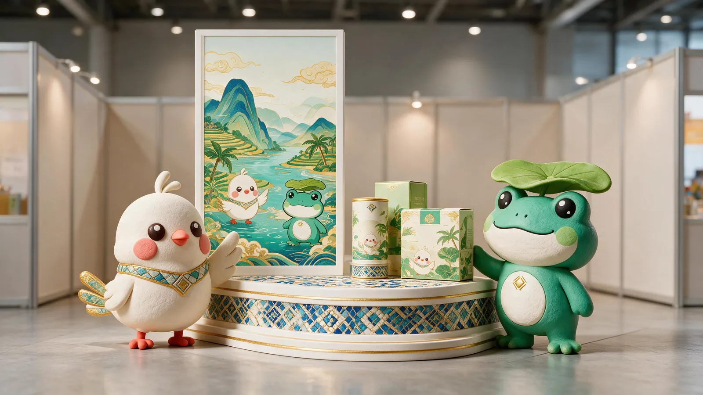

文化出海的产品化Productizing culture going global
跨境文创与展会Cross-border Goods & Expo
黎锦纹样做成首饰与环保布艺包，双语海报与茶饮包装走进国际展会——让海南文化成为可以被带走、被分享的商品。Brocade motifs become jewelry and canvas totes; bilingual posters and tea packaging enter international expos — Hainan culture becomes goods people can carry and share.

